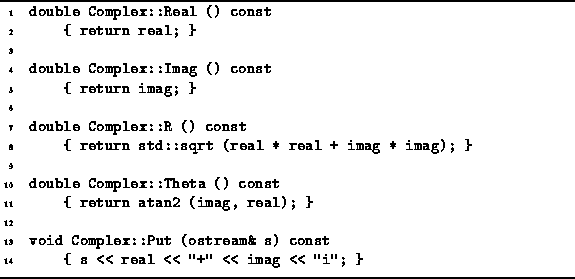

Data Structures and Algorithms
with Object-Oriented Design Patterns in C++
Data Structures and Algorithms
with Object-Oriented Design Patterns in C++An accessor is a member function that accesses the contents of an object but does not modify that object. In the simplest case, an accessor just returns the value of one of the member variables. In general, an accessor performs some computation using the member variables as long as that computation does not modify any of the member variables.
Program  defines the five accessor member functions
of the Complex class--Real, Imag, R, Theta and Put.
The fact that these functions are accessors is indicated by the
const keyword at the end of the function declarator.
The const signifies that this member function is not permitted
to modify the object on which it operates.
In fact, the C++ compiler will not allow any operations
that could modify any of the member variables of the object.
defines the five accessor member functions
of the Complex class--Real, Imag, R, Theta and Put.
The fact that these functions are accessors is indicated by the
const keyword at the end of the function declarator.
The const signifies that this member function is not permitted
to modify the object on which it operates.
In fact, the C++ compiler will not allow any operations
that could modify any of the member variables of the object.

Program: Complex Class Accessors
By defining suitable accessors, it is possible to hide the implementation of the class from the user of that class. Consider the following statements:
cout << c.real << endl; cout << c.Real() << endl;The first statement depends on the implementation of the Complex class. If we change the implementation of the class from the one given (which uses rectangular coordinates) to one that uses polar coordinates, then the first statement above must also be changed. On the other hand, the second statement does not need to be modified, provided we reimplement the Real member function when we switch to polar coordinates.
 Copyright © 1997 by Bruno R. Preiss, P.Eng. All rights reserved.
Copyright © 1997 by Bruno R. Preiss, P.Eng. All rights reserved.